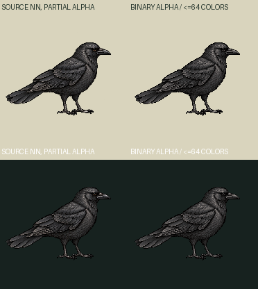
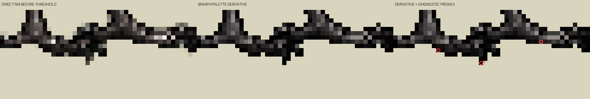

Zero generation calls and zero new drawings. Original source retained. One static ground-idle frame only; no blink atlas or body animation. Binary alpha128,63 opaque RGB colors plus transparent, no dithering. Whole192→186 nearest canvas conversion, density1, world186. Original world185.885350 rounds by+0.06168%; no body bounding-box fit or per-foot movement.
Exact source at old185.885CSS/world | derivative186CSS/world | enlarged derivative for inspection
Single idle frame held120 authored ticks at30Hz (4s loop). The clock advances; the bird image stays static. Continuous pivot107.53125,145.3125 is diagnostic pending exact current runtime schema. Empty admitted contacts; actual foot proxies and threshold losses are documented separately. No planted sole, pressure, geometryReviewed, supportWorld or Mac runtime claim.


Loading…